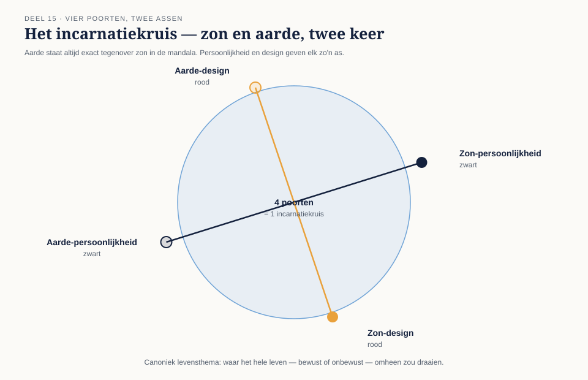

Vier poorten, twee assen
⏱ 14 minTerug naar deel 1-2: je geboortekaart komt uit twee berekeningen (persoonlijkheid/zwart, design/rood), en elke berekening kent dertien activatieposities waarvan de zon er één is. Wat je nog niet wist: de aarde staat in de mandala altijd exact tegenover de zon — 180 graden verderop in het wiel. Zon en aarde vormen dus samen een as, en die as is er twee keer: een persoonlijkheids-as (zon-persoonlijkheid + aarde-persoonlijkheid) en een design-as (zon-design + aarde-design). Samen zijn dat vier poorten — het incarnatiekruis.

Canoniek geldt het incarnatiekruis als het levensthema: niet wat je doet of hoe je beslist (dat is type en autoriteit), maar waar je hele leven — bewust of onbewust — omheen zou draaien. Elke combinatie van vier poorten krijgt in de canon een eigen naam, meestal ontleend aan het meest kenmerkende van de vier poortthema's (bijvoorbeeld een kruis met een sterk "kracht"-thema kan "Kruis van Kracht" heten).
Uit Werkboek deel 15, Opdracht 15.1